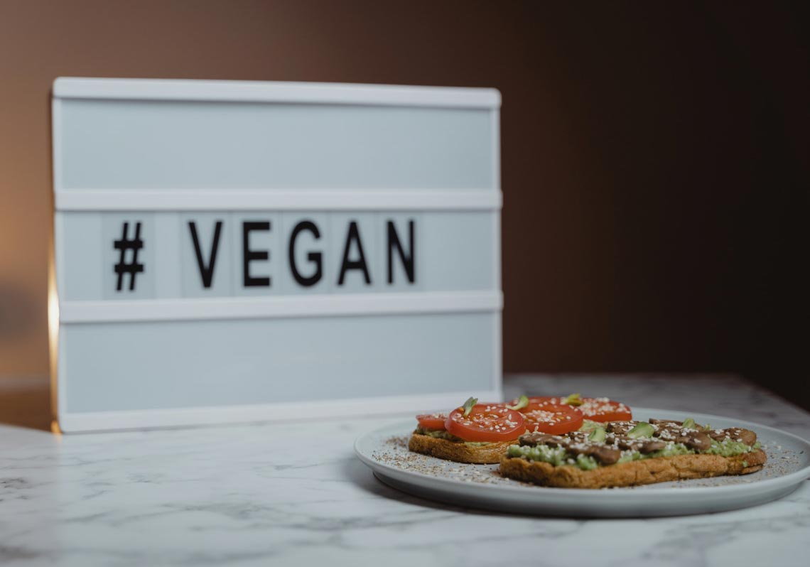
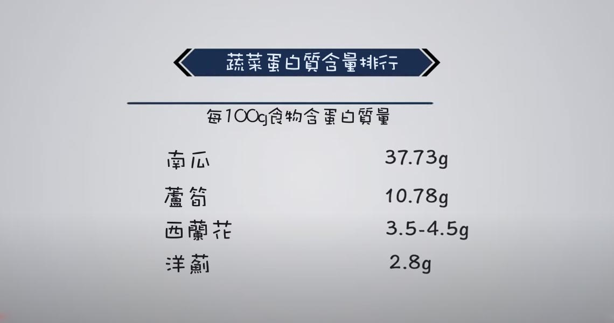

為什麼我感覺餓？
大家往往沒有意識到食物體積上的響應增長，比如一小片肉和一大堆蔬菜，其實卡路里一樣多。一旦開始吃蔬菜會發現食物數量上的變化，正是因為不知道這點才會覺得餓。
綠葉蔬菜像芹菜、冬瓜、黃瓜、西葫蘆和其他高含水量的蔬菜都可以隨便吃，這些蔬菜卡路里低，但含有高纖維高水分，會產生比較強的飽足感。還有像堅果類也可以產生飽足感，雖然卡路里高，但吃一點不會增重還能產生滿足感不至於吃過量。

很多人都有的一個問題是覺得營養不夠，感覺虛弱疲憊，很可能是因為蛋白質攝入量不夠。蛋白質生活中隨處都能補充，即使草莓和土豆都含有一些，某些蔬菜中含有的蛋白質甚至高於肉類食物。
擔心攝入的維生素和礦物質不足是另一個問題，但實際上蔬菜中含有大量鐵、維生素C和維生素D,只要確保食物多樣性，不要長期吃得雷同，多吃不同食物。
蔬菜對每人都有益，是全年齡段健康生活的選擇。蔬菜可以提供大量抗氧化劑，非常健康有助於身體排毒，幫助身體對抗外來的有害物質，確保身體吸收來自新鮮食材的維生素，對免疫系統和心臟都有好處。

對比肉食者和素食者，有科學研究表明，吃素較多的人比吃肉的平均長壽15至20年，而且活得更舒服。大家可是試著先從戒掉牛肉開始，然後是豬肉在是其他像是雞肉、魚肉甚至是乳製品，慢慢的轉變，不在於快而在於持之以恆地吃得健康。
很多人覺得無法完全戒掉動物食品，所以只吃海鮮，成了「魚素者」，有些人覺得只吃素食就行，所以會吃雞蛋和奶製品。其實最重要的即使熱愛食物，即使吃了不健康的東西別有負罪感，對食物沒有消極態度，時不時吃點肉、吃點油炸食品、吃點加工食品都沒關係只要整體上飲食健康。
總結
最後想讓大家明白，蔬食意味著吃大量蔬菜，可能九分蔬菜、一分肉類，蔬菜為主要營養攝取，肉類、奶製品為輔助。健身也要記得及時補充蛋白質；适量摄取卡路里能避免暴饮暴食；蔬菜饮食对亚健康中年人群帮助更大；好的饮食习惯的养成需要逐步改善，不可心急，最后希望大家都能培养健康的饮食习惯。